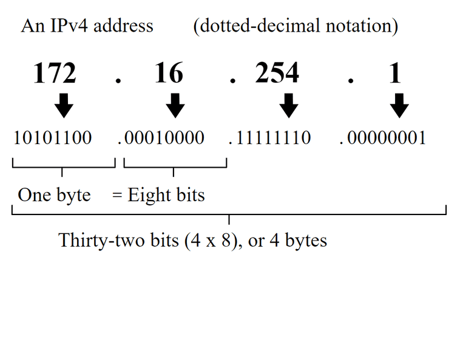

IP adresi, Internet Protocol (IP) ağ protokolü tarafından kullanılan bir tanımlayıcıdır. IP adresleri, bir cihazın ağdaki benzersiz kimliğini belirlemek için kullanılır. İnternet üzerindeki iletişim, IP adreslerinin doğru bir şekilde belirlenmesine dayanır.
| Sınıf | IP Aralığı |
|---|---|
| Class A | 0.0.0.0 - 127.255.255.255 |
| Class B | 128.0.0.0 - 191.255.255.255 |
| Class C | 192.0.0.0 - 223.255.255.255 |